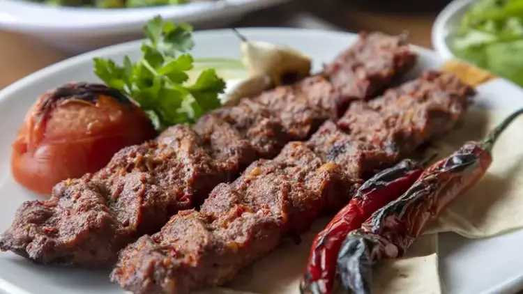
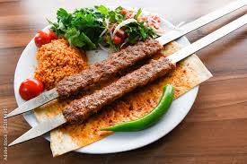
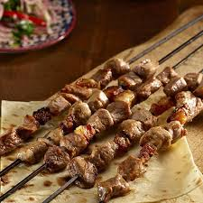
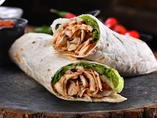

Adana Kebab
Adana Kebab is a traditional Turkish kebab that originated from the city of Adana in southern Türkiye. It is made from ground lamb (often mixed with beef) that is seasoned with a variety of spices, including red pepper, garlic, and cumin. The meat is molded onto long metal skewers and grilled over charcoal, giving it a smoky flavor. Adana Kebab is typically served with flatbread, grilled vegetables, and a fresh salad.
The dish is named after the city of Adana, which has a long history of kebab-making traditions. The combination of spicy meat and the smoky grilling method has made Adana Kebab famous throughout Türkiye and the world. Its origins are debated, but it is believed to have been developed as a way to use local ingredients, including the abundant lamb in the region.

Urfa Kebab
Urfa Kebab is a traditional Turkish dish from the city of Urfa in southeastern Türkiye. Made with minced lamb, it is usually milder than Adana Kebab, using less spicy seasoning. Ingredients like garlic, onion, and cumin are used to flavor the meat, which is then grilled on skewers. The result is a tender, juicy kebab often served with flatbread, grilled vegetables, and yogurt. It is popular for those who enjoy flavorful but not overly spicy food.
Çöp Şiş
Çöp şiş is a traditional Turkish dish made by threading small pieces of marinated meat (usually lamb or chicken) onto skewers and grilling them.
The history of çöp şiş dates back to the Ottoman Empire and is closely related to the tradition of "şiş kebap." The term "çöp şiş" specifically refers to the use of small, thin skewers. Traditionally, it is grilled over an open flame, often in villages or on the streets.

Döner
Döner is one of the most well-known and loved dishes of Turkish cuisine. Traditionally, it involves marinating lamb, chicken, or beef with spices, then placing it on a large vertical skewer to cook. As the meat turns on the skewer, the outer layer cooks, and it is sliced off in thin pieces and served. Döner is typically served with rice, flatbread, or in a wrap (dürüm), accompanied by yogurt, salad, or vegetables.
The origin of döner dates back to the Ottoman Empire. However, its current form and popularity as we know it today started in the 19th century in Istanbul. During the Ottoman period, the method of cooking meat on a vertical spit was used as a practical cooking technique, especially in military kitchens. Döner, as we recognize it today, was developed and started to spread in Istanbul during the late 19th or early 20th century.
Today, döner is not only popular in Türkiye but has become a beloved dish worldwide. Germany played an important role in popularizing döner, especially as it became widely known through immigrants, and is now recognized globally as “döner kebab.”

Kuzu Tandır
Kuzu Tandır is a traditional Turkish dish made from lamb that is slow-cooked to perfection. The meat is usually marinated with a blend of spices and herbs, including garlic, cumin, and thyme, before being cooked in an underground oven or a specially designed tangır (clay oven).
The slow cooking process ensures that the lamb becomes incredibly tender and flavorful, often falling off the bone. Kuzu Tandır is typically served with rice, flatbread, or vegetables, and is a popular dish for special occasions and family gatherings in Türkiye.